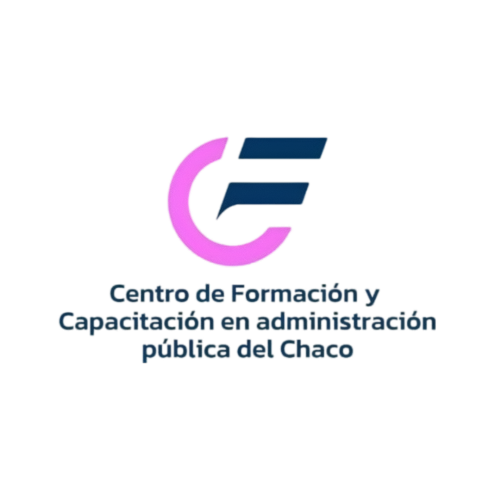

Tablero interactivo de exportaciones provinciales con información anual de comercio exterior. Los gráficos principales se expresan en millones de USD FOB corrientes; las tablas incorporan dólares FOB absolutos, peso neto y participaciones relativas para facilitar el análisis comparativo.
Selector de unidad: dólares FOB absolutos, millones de USD FOB corrientes o peso neto.
La distribución relativa corresponde a la participación de cada rubro en el total exportado provincial de cada año.
La tabla de desagregados muestra los rubros exportados hacia el país seleccionado.